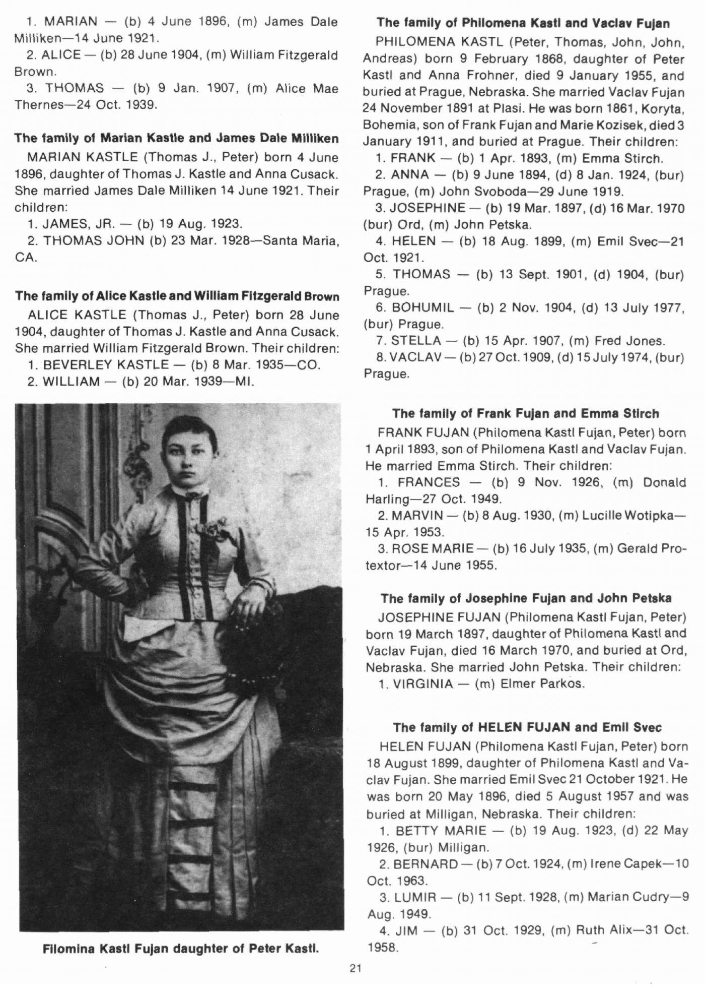
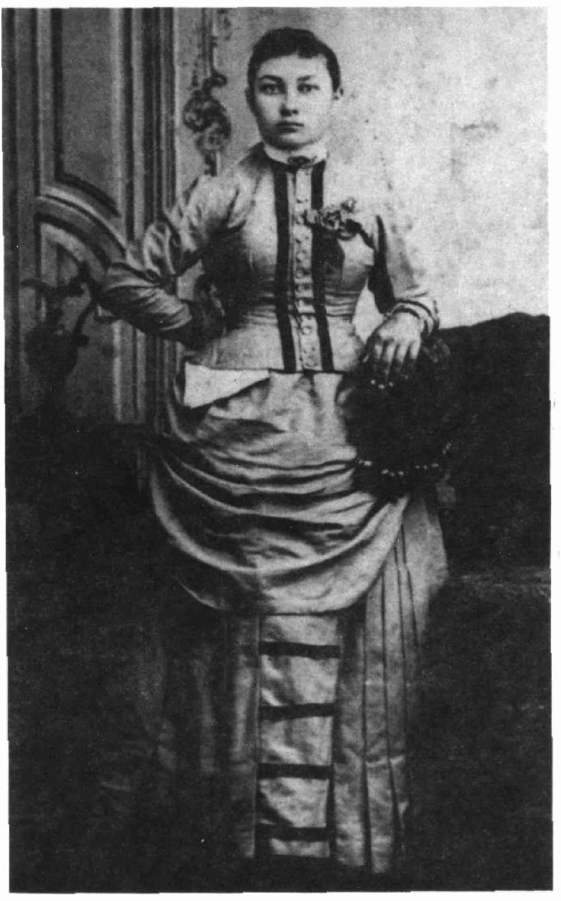

The book · The Family of Peter Kastl
Page 21 The family of Marian Kastle and James Dale Milliken


Transcription
- MARIAN — (b) 4 June 1896, (m) James Dale Milliken—14 June 1921.
- ALICE — (b) 28 June 1904, (m) William Fitzgerald Brown.
- THOMAS — (b) 9 Jan. 1907, (m) Alice Mae Thernes—24 Oct. 1939.
The family of Marian Kastle and James Dale Milliken
MARIAN KASTLE (Thomas J., Peter) born 4 June 1896, daughter of Thomas J. Kastle and Anna Cusack. She married James Dale Milliken 14 June 1921. Their children:
- JAMES, JR. — (b) 19 Aug. 1923.
- THOMAS JOHN (b) 23 Mar. 1928—Santa Maria, CA.
The family of Alice Kastle and William Fitzgerald Brown
ALICE KASTLE (Thomas J., Peter) born 28 June 1904, daughter of Thomas J. Kastle and Anna Cusack. She married William Fitzgerald Brown. Their children:
- BEVERLEY KASTLE — (b) 8 Mar. 1935—CO.
- WILLIAM — (b) 20 Mar. 1939—MI.


The family of Philomena Kastl and Vaclav Fujan
PHILOMENA KASTL (Peter, Thomas, John, John, Andreas) born 9 February 1868, daughter of Peter Kastl and Anna Frohner, died 9 January 1955, and buried at Prague, Nebraska. She married Vaclav Fujan 24 November 1891 at Plasi. He was born 1861, Koryta, Bohemia, son of Frank Fujan and Marie Kozisek, died 3 January 1911, and buried at Prague. Their children:
- FRANK — (b) 1 Apr. 1893, (m) Emma Stirch.
- ANNA — (b) 9 June 1894, (d) 8 Jan. 1924, (bur) Prague, (m) John Svoboda—29 June 1919.
- JOSEPHINE — (b) 19 Mar. 1897, (d) 16 Mar. 1970 (bur) Ord, (m) John Petska.
- HELEN — (b) 18 Aug. 1899, (m) Emil Svec—21 Oct. 1921.
- THOMAS — (b) 13 Sept. 1901, (d) 1904, (bur) Prague.
- BOHUMIL — (b) 2 Nov. 1904, (d) 13 July 1977, (bur) Prague.
- STELLA — (b) 15 Apr. 1907, (m) Fred Jones.
- VACLAV — (b) 27 Oct. 1909, (d) 15 July 1974, (bur) Prague.
The family of Frank Fujan and Emma Stirch
FRANK FUJAN (Philomena Kastl Fujan, Peter) born 1 April 1893, son of Philomena Kastl and Vaclav Fujan. He married Emma Stirch. Their children:
- FRANCES — (b) 9 Nov. 1926, (m) Donald Harling—27 Oct. 1949.
- MARVIN — (b) 8 Aug. 1930, (m) Lucille Wotipka—15 Apr. 1953.
- ROSE MARIE — (b) 16 July 1935, (m) Gerald Protextor—14 June 1955.
The family of Josephine Fujan and John Petska
JOSEPHINE FUJAN (Philomena Kastl Fujan, Peter) born 19 March 1897, daughter of Philomena Kastl and Vaclav Fujan, died 16 March 1970, and buried at Ord, Nebraska. She married John Petska. Their children:
- VIRGINIA — (m) Elmer Parkos.
The family of HELEN FUJAN and Emil Svec
HELEN FUJAN (Philomena Kastl Fujan, Peter) born 18 August 1899, daughter of Philomena Kastl and Vaclav Fujan. She married Emil Svec 21 October 1921. He was born 20 May 1896, died 5 August 1957 and was buried at Milligan, Nebraska. Their children:
- BETTY MARIE — (b) 19 Aug. 1923, (d) 22 May 1926, (bur) Milligan.
- BERNARD — (b) 7 Oct. 1924, (m) Irene Capek—10 Oct. 1963.
- LUMIR — (b) 11 Sept. 1928, (m) Marian Cudry—9 Aug. 1949.
- JIM — (b) 31 Oct. 1929, (m) Ruth Alix—31 Oct. 1958.
People from the line of descent on this page
- Thomas J. Kastl 1866–1942
- Marian Kastle b. 1896
- Alice Kastle b. 1904
- Thomas Kastle b. 1907
- James Milliken, Jr. b. 1923
- Thomas John Milliken b. 1928
- Beverley Kastle Brown b. 1935
- William Brown b. 1939
- Philomena Kastl 1868–1955
- Vaclav Fujan 1861–1911
- Frank Fujan b. 1893
- Anna Fujan 1894–1924
- Josephine Fujan 1897–1970
- Helen Fujan b. 1899
- Thomas Fujan 1901–1904
- Bohumil Fujan 1904–1977
- Stella Fujan b. 1907
- Vaclav Fujan 1909–1974
- Frances Fujan b. 1926
- Marvin Fujan b. 1930
- Rose Marie Fujan b. 1935
- Virginia Petska
- Emil Svec 1896–1957
- Betty Marie Svec 1923–1926
- Bernard Svec b. 1924
- Lumir Svec b. 1928
- Jim Svec b. 1929
Transcriber’s notes
Top-left child list (Marian, Alice, Thomas) continues the family of Thomas J. Kastl or Kastle and Anna Cusack from the previous page. Helen Fujan/Emil Svec child list continues on next page (5. RUBY). Caption spells 'Filomina' while text spells 'Philomena'. Heading 'The family of HELEN FUJAN and Emil Svec' has the name in caps as printed.